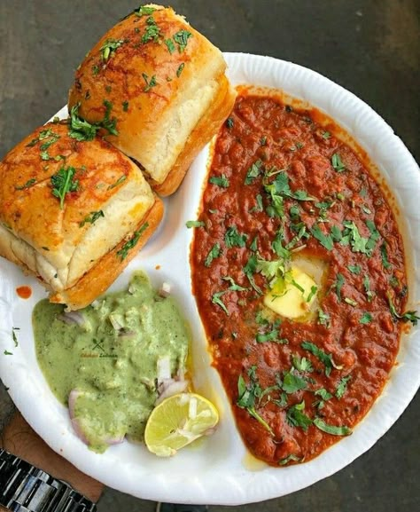
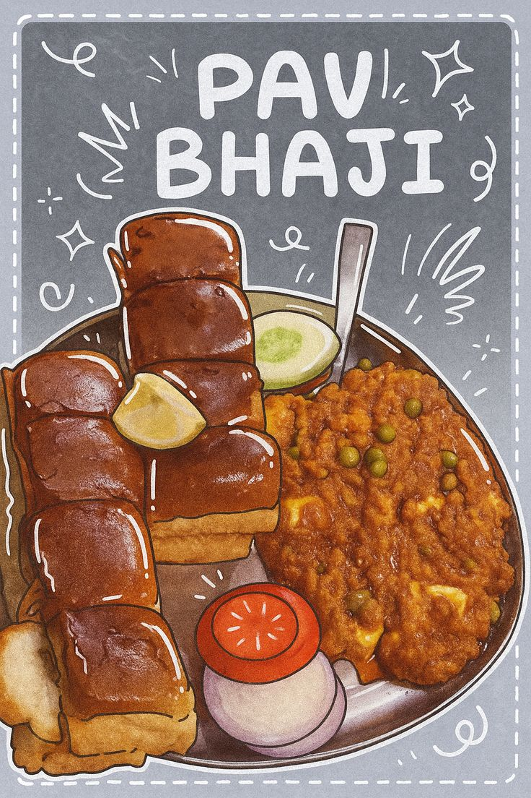

No matter how far I go, coming home always means one thing — mom’s pav bhaji. Warm, buttery, and filled with love. Whenever I come back from hostel my mother makes my favourite dish and it's even more delicious because it is made by her.
Preparation Time: 30 minutes
Difficulty: Medium
Be careful: Don’t skip butter for authentic taste.
Butter makes everything better 😌